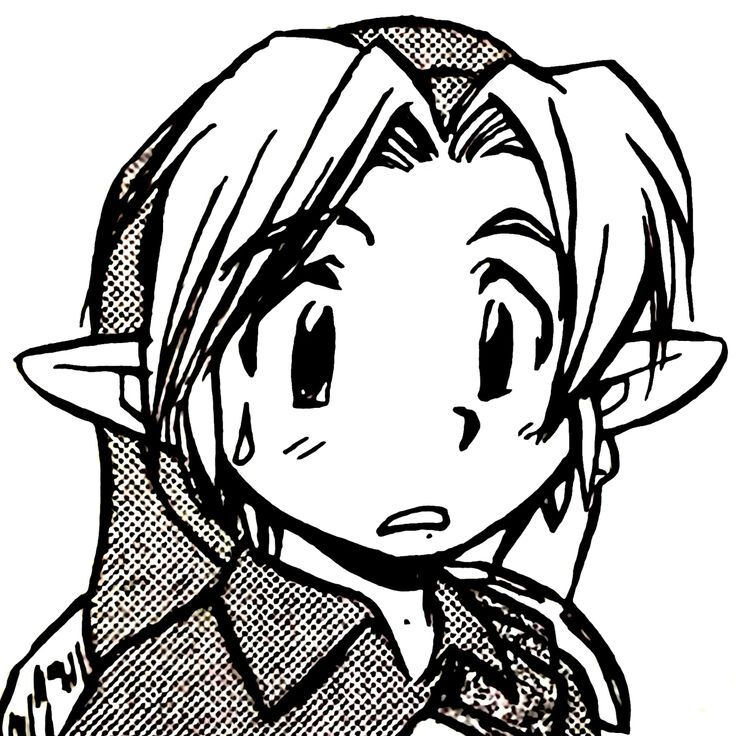

Invisible
Duran Duran
Mis datos personales
Nombre: Diego
Edad: 19 años
Quien soy?
Soy alguien muy apasionado por mis gustos y las cosas que amo, creci bastante solo por lo que
me crie rodeado principalmente de peliculas, series, comics y videojuegos lo que me ayudo a
descrubir mis mas grandes pasiones, pero tambien me hizo alguien sensible,timido e inseguro,
pese a eso he podido desarrollarme de buena manera en el mundo y tener una vision sumamente
optimista de el.
Hago mi mayor esfuerzo por lo y los que quiero.